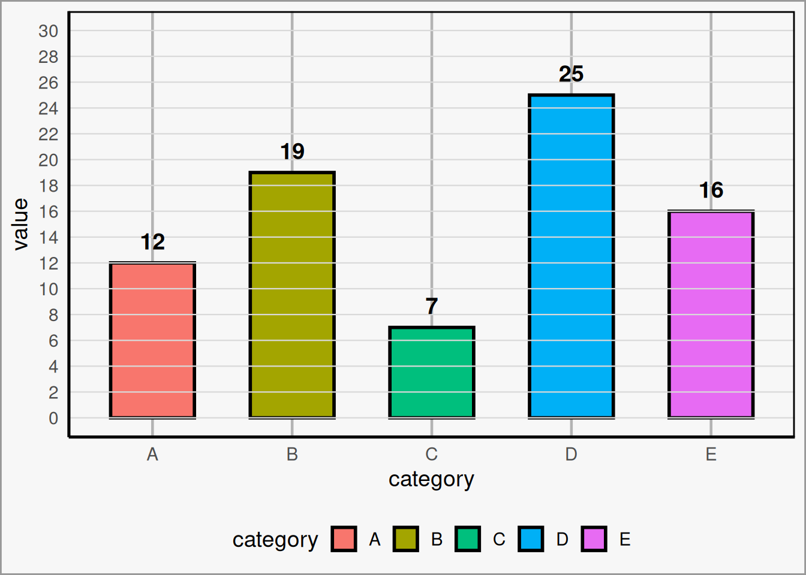
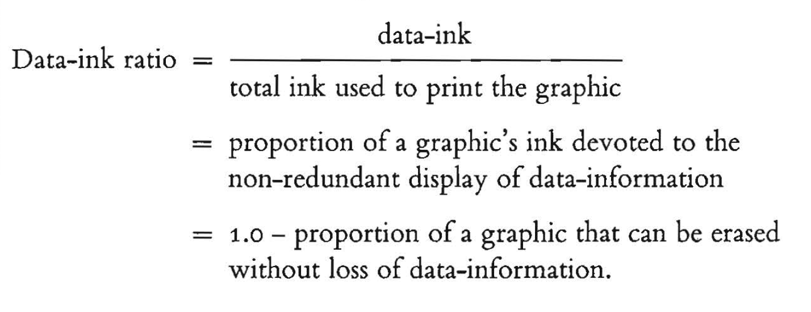
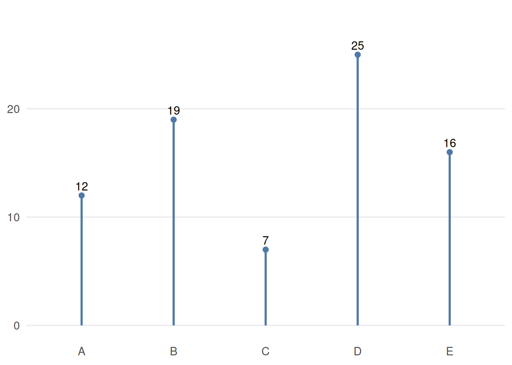

2 Theory
“Graphical excellence is that which gives to the viewer the greatest number of ideas in the shortest time with the least ink in the smallest space.”
— Edward Tufte, The Visual Display of Quantitative Information (2nd ed.)
2.1 The Data-Ink Ratio
The data-ink ratio, proposed in Edward Tufte’s The Visual Display of Quantitative Information (2nd ed.) is a very helpful concept to avoid unnecessary noise in your plots:

The goal of the data-ink ratio is 5-fold:
- Above all else show the data.
- Maximize the data-ink ratio.
- Erase non-data-ink.
- Erase redundant data-ink.
- Revise and edit.
Here is an example of a low data-ink ratio plot that could use some cleaning up. Admittedly, this is a bit exaggerated, but its not far off from what is found in many scientific publications:
A few aspects of this plot can be adjusted:
- Do we need thick, multi-colored bars to convey our information?
- Do grid lines add anything to the plot?
- Does the legend add anything to the plot?
- Does the axis labels add anything to the plot?
Here is an example of the same data, but with a maximized data-ink ratio:

2.2 Colors and Fonts
Two of the most important design choices in a visualization are color and typography. These choices can either support the data or distract from it.
2.2.1 Bad Example
Color
Color should be used intentionally. Its main job is not to decorate the plot, but to help the viewer understand what matters.
A few useful guidelines:
-
Use color to highlight important parts of the data.
Color is most effective when it draws attention to a key pattern, category, or comparison rather than coloring everything equally. -
Avoid flashy colors, and make sure contrast to the background isn’t harsh.
Extremely bright or saturated colors can be distracting. Softer, deliberate color choices are usually easier to look at and help keep the focus on the data. -
When you have to stick to poor branding, capitalize on using blacks and whites.
If required institutional or brand colors are not ideal for data visualization, neutral tones can help balance the design and reduce visual clutter. - Make considerations for color blindness. Avoid relying on color alone to communicate meaning. When possible, use accessible palettes and reinforce distinctions with labels, position, or shape.
Font
Typography should support readability and visual hierarchy without calling attention to itself.
Some general principles:
-
The default is usually fine.
You rarely need a special font to make a good chart. Clear and familiar fonts are often the best choice. -
Use italics, bolding, caps, and size instead of multiple fonts.
These tools are usually enough to create emphasis and structure while keeping the design consistent. -
Use a color that contrasts your background, usually black or white.
Text should be easy to read at a glance. In most cases, high-contrast text is the safest and clearest option. - Don’t make your text so small that it’s hard to read. Labels, titles, and annotations are only useful if your audience can comfortably read them.
Good use of color and font should feel almost invisible: they should guide attention, improve clarity, and stay out of the way of the data.
2.2.2 Good Example (Branded)
Color
Color should be used intentionally. Its main job is not to decorate the plot, but to help the viewer understand what matters.
A few useful guidelines:
Use color to highlight important parts of the data. Color is most effective when it draws attention to a key pattern, category, or comparison rather than coloring everything equally.
Avoid flashy colors, and make sure contrast with the background is not too harsh. Extremely bright or saturated colors can be distracting. Softer, deliberate color choices are usually easier to look at and help keep the focus on the data.
When you have to stick to poor branding choices, make use of black, white, and grayscale. If required institutional or brand colors are not ideal for data visualization, neutral tones can help balance the design and reduce visual clutter.
Make considerations for color blindness. Avoid relying on color alone to communicate meaning. When possible, use accessible palettes and reinforce distinctions with labels, position, or shape.
Font
Typography should support readability and visual hierarchy without calling attention to itself.
Some general principles:
The default is usually fine. You rarely need a special font to make a good chart. Clear and familiar fonts are often the best choice.
Use italics, bolding, capitalization, and size before introducing multiple fonts. These tools are usually enough to create emphasis and structure while keeping the design consistent.
Use a font color that contrasts with the background, usually black or white. Text should be easy to read at a glance. In most cases, high-contrast text is the safest and clearest option.
Do not make your text so small that it becomes hard to read. Labels, titles, and annotations are only useful if your audience can comfortably read them.
Good use of color and font should feel almost invisible: they should guide attention, improve clarity, and stay out of the way of the data.
2.2.3 Best Example (Neutral)
Color
Color should be used intentionally. Its main job is not to decorate the plot, but to help the viewer understand what matters.
A few useful guidelines:
Use color to highlight important parts of the data. Color is most effective when it draws attention to a key pattern, category, or comparison rather than coloring everything equally.
Avoid flashy colors, and make sure contrast with the background is not too harsh. Extremely bright or saturated colors can be distracting. Softer, deliberate color choices are usually easier to look at and help keep the focus on the data.
When you have to stick to poor branding choices, make use of black, white, and grayscale. If required institutional or brand colors are not ideal for data visualization, neutral tones can help balance the design and reduce visual clutter.
Make considerations for color blindness. Avoid relying on color alone to communicate meaning. When possible, use accessible palettes and reinforce distinctions with labels, position, or shape.
Font
Typography should support readability and visual hierarchy without calling attention to itself.
Some general principles:
The default is usually fine. You rarely need a special font to make a good chart. Clear and familiar fonts are often the best choice.
Use italics, bolding, capitalization, and size before introducing multiple fonts. These tools are usually enough to create emphasis and structure while keeping the design consistent.
Use a font color that contrasts with the background, usually black or white. Text should be easy to read at a glance. In most cases, high-contrast text is the safest and clearest option.
Do not make your text so small that it becomes hard to read. Labels, titles, and annotations are only useful if your audience can comfortably read them.
Good use of color and font should feel almost invisible: they should guide attention, improve clarity, and stay out of the way of the data.
2.3 SMU Brand Guidelines
SMU Marketing and Communications publishes brand guidelines that should be used for any public-facing marketing content. Even for internal products, following brand guidelines is always a good idea, as long as it doesn’t take away from the visualization. Some journals may also have brand guidelines you need to follow.
SMU Brand Guidelines: https://www.smu.edu/brand